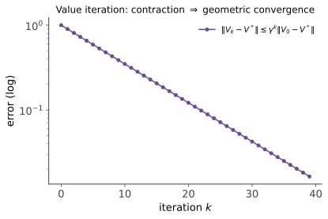

MDP II · 价值迭代、策略迭代与 LP
对标：Puterman §6.3–6.9 ｜ 前置：mdp-01、本科优化 IV、数值 II（迭代法视角） 解 MDP 的三大经典算法：价值迭代（不动点迭代的直译）、策略迭代（"评估-改进"交替，有限步精确收敛）、线性规划（把 Bellman 变成约束）。三者的收敛性证明各自动用一件前置武器——压缩、单调性、对偶。
1. 价值迭代（VI）

收敛性 = mdp-01 压缩映像的直接推论：\(\|V_k - V^*\| \leq \gamma^k\|V_0 - V^*\|\)。停机与策略质量【证明】：若 \(\|V_{k+1} - V_k\| \leq \varepsilon\)，则对 \(V_{k+1}\) 贪心的策略 \(\pi\) 满足
证：三角不等式拆成"\(V_k\) 距不动点"（压缩残差估计 \(\leq \frac{\gamma\varepsilon}{1-\gamma}\)）与"贪心损失"两段，各由压缩性与 \(T^\pi V_{k+1} = TV_{k+1}\) 控制。\(\blacksquare\)——"残差小 ⇒ 策略好"有明码换算（除以 \(1-\gamma\) 的放大是 RL 误差分析的通用形态：视界越长，价值误差对策略越致命）。
2. 策略迭代（PI）
交替两步：评估（解 \(V^{\pi_k} = T^{\pi_k}V^{\pi_k}\)——线性方程组 \((I - \gamma P^{\pi_k})V = r^{\pi_k}\)，数值 II 的主场；矩阵可逆因 \(\rho(\gamma P) \leq \gamma < 1\)——谱半径判据上岗）；改进（对 \(V^{\pi_k}\) 贪心得 \(\pi_{k+1}\)）。
定理（单调改进与有限收敛） \(V^{\pi_{k+1}} \geq V^{\pi_k}\)（逐点），且有限状态动作空间上 PI 在有限步内到达最优策略。 【证明】 贪心定义给 \(T^{\pi_{k+1}}V^{\pi_k} = TV^{\pi_k} \geq T^{\pi_k}V^{\pi_k} = V^{\pi_k}\)。\(T^{\pi_{k+1}}\) 单调（\(U \geq V \Rightarrow T^\pi U \geq T^\pi V\)——期望保序）：反复作用
得单调性；严格改进直到贪心不再改变——此时 \(V^{\pi} = TV^{\pi}\) 即最优（mdp-01）；策略只有有限个且不重复访问 ⇒ 有限步停机。\(\blacksquare\)
VI vs PI 的工程性格：VI 每步便宜（一次扫描）但要 \(O\big(\frac{\ln(1/\varepsilon)}{1-\gamma}\big)\) 步；PI 每步贵（解线性系统）但步数极少（实践常个位数；理论上也是强多项式的活跃研究点【引用】）。现代 RL 的框架读法：actor-critic = 近似的 PI（critic 做评估、actor 做改进）；DQN 的 target network = 慢速的 VI——两大经典算法是深度 RL 动物园的骨架。
3. 线性规划路线（第三条等价路）
观察（Bellman 不等式与最小上解）：\(V \geq TV \Rightarrow V \geq V^*\)（单调性反复作用【一行】）——\(V^*\) 是满足"超调"约束的最小函数。故：
（\(c > 0\) 任意权重）的解恰是 \(V^*\)——MDP 是一个线性规划（约束逐 \((s,a)\) 线性）。对偶 LP 的变量 \(\mu(s,a)\) 是折现占用测度（"策略在各状态动作上花的折现时间"），互补松弛恰对应"最优策略只用最优动作"——本科优化 IV 的 LP 对偶/影子价格在决策过程里的完整重演；占用测度视角也是现代 RL 理论（离线 RL、约束 RL）的标准语言【引用】。
4. 近似的预警（通往 mdp-03）
以上全部假设 \(P, r\) 已知且状态可枚举。真实 RL 两座大山：模型未知（只能采样）与状态爆炸（函数逼近）。理论的分水岭【引用陈述】：带函数逼近的 Bellman 迭代可以发散（Baird 反例——投影破坏压缩性："致命三合一"：函数逼近 + bootstrap + off-policy）；线性情形的投影 Bellman 算子在加权范数下仍压缩（权重 = on-policy 分布）——TD 收敛理论的地基（下一页）。"压缩性是娇贵的"：mdp-01 的美好在近似世界要逐条重新验伪。
5. 练习与要点
例 1（PI 亲手转两轮） 2 状态 2 动作小 MDP（自设数字）：解 \(2\times2\) 线性系统评估、贪心改进——两轮内到最优（体验"步数少"）；同题跑 VI 数迭代次数对比。
例 2（\(\frac{1}{1-\gamma}\) 放大的实感） \(\gamma = 0.99\)、价值估计误差 \(\varepsilon = 0.01\)：策略损失界 \(\frac{2\gamma\varepsilon}{1-\gamma} \approx 2\)——1% 的价值误差可放大成 2 单位的策略损失：长视界任务对估计精度的苛刻由此定量。
例 3（LP 路线验证） 把例 1 的 MDP 写成 LP 解之（任意 LP 求解器/手算顶点）：与 PI 结果对账 ✓——三条路线（不动点/迭代/LP）同一答案，这是对理解的最好测试。\(\blacksquare\)
下一页：去掉"模型已知"——随机逼近理论（Robbins–Monro）与 Q-learning 的收敛性：随机世界里的不动点迭代。